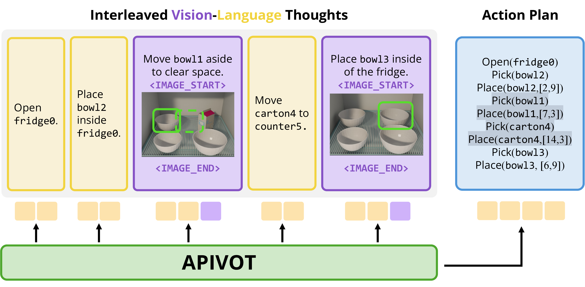
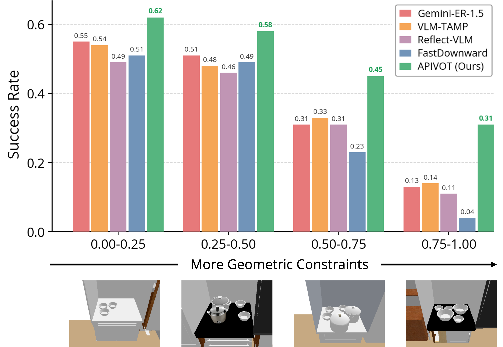
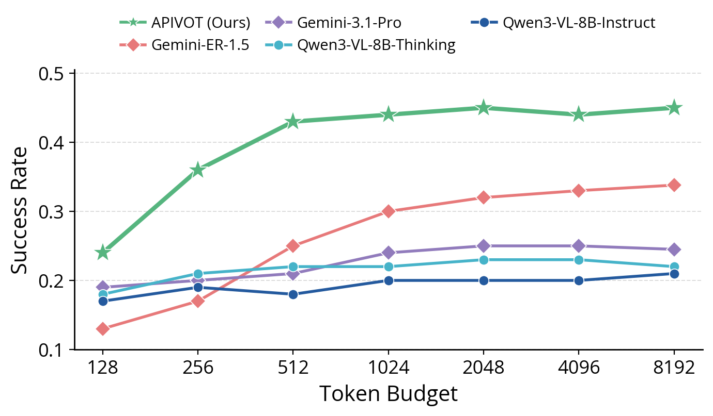
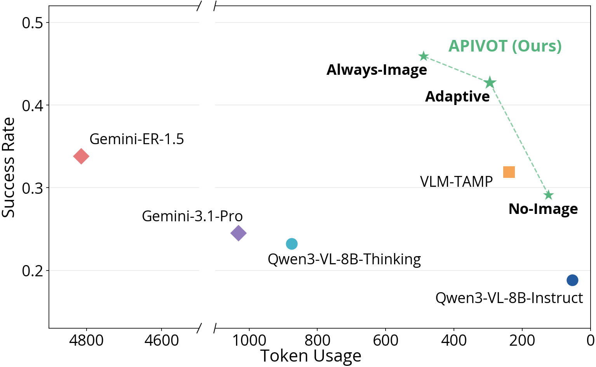

1Stanford University · 2National University of Singapore · †Equal advising
Long-horizon robot planning requires jointly reasoning over semantic task structure and geometric feasibility. To successfully execute a task, a robot must decompose goals, select task-relevant objects, and sequence actions, while ensuring that plans satisfy spatial constraints such as limited free space and object collisions. In this work, we propose APIVOT, a VLM-based planner that adaptively interleaves language and visual thoughts for long-horizon planning. APIVOT learns to rely on language for semantic reasoning, while using visual thoughts as imagined future states for internal verification of geometric feasibility. On long-horizon kitchen tasks, APIVOT outperforms general-purpose VLMs and prior planning frameworks, achieving the largest gains in spatially constrained settings. We find that APIVOT learns meaningful modality selection behavior, demonstrating that adaptive interleaving of vision-language thoughts improves both planning success and reasoning efficiency.
Consider a long-horizon task: “Store the leftovers in the fridge.” To succeed, a robot must reason semantically about what to store, which containers to use, and which actions must happen first. It must also reason geometrically about how those containers fit inside the fridge and whether there is enough free space. These decisions are tightly coupled: a semantically valid plan can still fail if it ignores spatial constraints.
We propose APIVOT, a VLM-based planner that interleaves language reasoning with visual thoughts: imagined future scene states that help the model reason about spatial constraints. APIVOT uses language where symbolic and semantic reasoning are sufficient, and invokes visual thoughts when geometric precision is needed. By adaptively pivoting between these modalities, our model produces more feasible plans for long-horizon tasks.
Given a task instruction, scene observation, and detected objects, APIVOT generates an interleaved reasoning trace of vision-language thoughts, followed by an executable plan. Language is used to decompose goals, track prerequisites, and choose actions, while visual thoughts are used when the subgoal depends on geometry, free space, or potential collisions.

APIVOT is trained with supervised fine-tuning on reference traces that demonstrate interleaved reasoning and successful planning.
We train APIVOT with a three-stage curriculum that progressively teaches it to use visual thoughts, generate them, and adaptively select when they are needed. Across all stages, training uses a standard cross-entropy loss over reasoning traces and plans, along with an image-alignment loss that aligns generated visual thoughts with encoded future scene observations.
The model is given ground-truth visual thoughts and learns to use them for downstream planning.
The model autoregressively generates its own visual thoughts, representing imagined subgoals.
The model learns to use visual thoughts selectively for geometry-sensitive subgoals.
We evaluate APIVOT on three long-horizon KitchenWorlds tasks: Containment (ID), Sorting (ID), and Storing Leftovers (OOD). APIVOT improves planning success over general-purpose VLMs, VLM-based planners (+8.1 points), and symbolic planning baselines (+9.0 points).
These gains are consistent across all three task families, including the held-out Storing Leftovers task. This suggests that interleaved language and visual reasoning supports generalization to new task compositions beyond the training distribution.
| Model | Average | Containment (ID) | Sorting (ID) | Storing Leftovers (OOD) |
|---|---|---|---|---|
| VLM Baselines | ||||
| Gemini-3.1-Pro | 0.245 | 0.281 | 0.241 | 0.213 |
| Gemini-ER-1.5 | 0.338 | 0.364 | 0.339 | 0.311 |
| Qwen3-VL-8B-Instruct | 0.188 | 0.218 | 0.183 | 0.162 |
| Qwen3-VL-8B-Thinking | 0.232 | 0.259 | 0.234 | 0.204 |
| Planning Baselines | ||||
| FastDownward | 0.272 | 0.331 | 0.247 | 0.238 |
| Reflect-VLM | 0.292 | 0.348 | 0.272 | 0.257 |
| VLM-TAMP | 0.329 | 0.370 | 0.311 | 0.307 |
| APIVOT (Ours) | 0.419 | 0.472 | 0.421 | 0.365 |
Task success rate (fraction of episodes that succeed) across task families. Containment and Sorting are in-distribution (ID); Storing Leftovers is a held-out, out-of-distribution (OOD) task.



APIVOT successfully anticipates geometric constraints, producing feasible plans where baselines struggle.
@article{apivot2026,
title = {APIVOT: Adaptive Planning with Interleaved Vision-Language Thoughts},
author = {Jin, Emily and Hsu, Joy and Xu, Yiqing and Liu, Weiyu and Haber, Nick and Wu, Jiajun},
year = {2026}
}